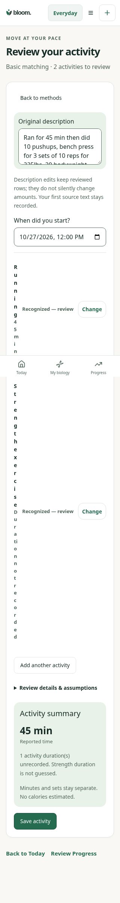
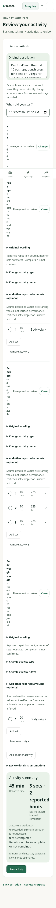
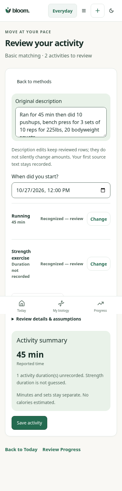
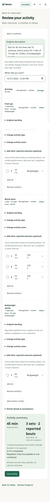
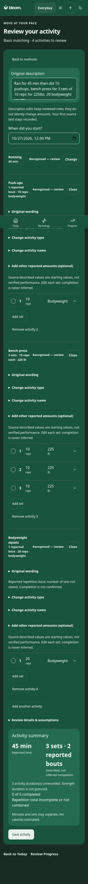

Exact owner acceptance sentence. Controlled before pins old parsercb52a5c in the current review shell, reproducing2parents/0set rows. It is not the original hosted screenshot or a claim of complete old-build parity. After uses the same source and viewport with4parents,3explicit bench sets and2reported repetition bouts. Original PNGs retained; no private report data.
Each movement survives with source wording; no generic Strength exercise replaces it.
Bodyweight/unknown external load remains distinct from measured zero.
Explicit225lb values preserve original units and pending completion.
Edits, original text, IDs, one-save receipt/reload/modes/account verified through actual HTTP/encrypted SQL.
Basic matching only. Full shared on-device AI promise, independent held-out/model/device benchmarks and final specialist acceptance remain OPEN/NOT_RUN.

Before320: source movements/counts/load lost.

After320:4source-named editable parents.

Before390.

After390.

After390dark. Fixed bottom navigation appears once in full-page captures; source content is scrollable in the actual browser.